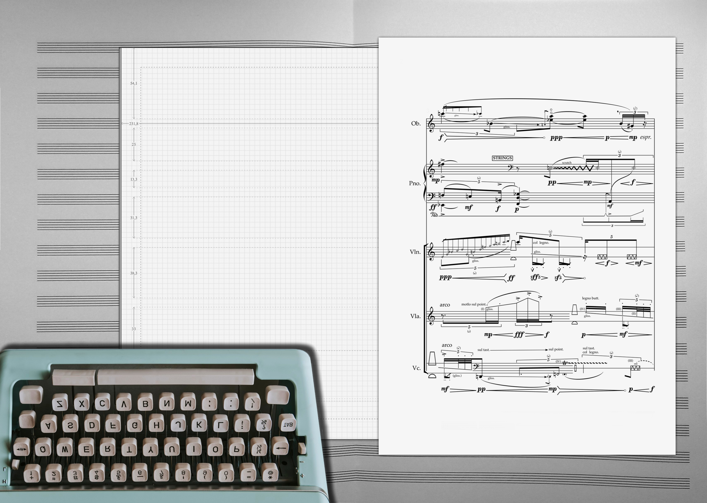

ZSCORE delivers specialized services in score development, engraving, audio programming, and software engineering for the contemporary music landscape.
Our approach combines engraving with advanced automation, ensuring rapid turnaround and structural integrity for even the most demanding projects. From large-scale operas to interactive audio systems, ZSCORE provides precise technical execution that aligns with artistic vision.
Created by composers, for composers, innovation. Efficient. Scalable. Precise.



Core Services
Automated Score Engraving & Editorial
Precise digital engraving that makes complex contemporary and orchestral scores immediately usable. Parts arrive ready for rehearsal. Every cue, layout choice, and page turn is optimized. Works seamlessly with Sibelius, MuseScore, LilyPond, and MusicXML.
Engraving Automation Development
Custom tools that eliminate repetitive score editing tasks. Layout and formatting follow strict rules to prevent mistakes. Integrates directly into your existing workflow so you spend less time on routine work and more time composing.
Computer-Assisted Orchestration & Notation
Rule-based systems that translate compositional ideas into full scores without manual typesetting. Speeds up orchestration for large works and tight schedules. Maintains your artistic intent at every step.
Audio Programming & System Design
Real-time frameworks for live electronics, spatial audio, and generative sound. Built in Max/MSP, Pure Data, SuperCollider, or custom environments. Scales from solo projects to multichannel concert setups.
Proofreading and performance documentation
Ensembles and orchestras need flawless scores to focus on music. Clear documentation removes errors that slow rehearsals. Scores arrive so performers understand your intent at first glance and spend time mastering the music.
Technical Consulting & Content Creation
Solutions for notation systems, plugin workflows, and performance planning that remove technical roadblocks. Engaging content—score animations and demonstrations—brings complex music to life online.
Selected Projects
A showcase of ZSCORE's capabilities in engraving, software development, and audio programming. Click on a project to learn more.
Loading portfolio...
Latest News & Updates
Stay informed about ZSCORE's latest activities, service updates, and insights.
Loading news...
About ZSCORE
ZSCORE is a collaborative studio working with composers, ensembles, orchestras, and publishers. We focus on precise, high-speed workflows for score preparation, musical software, and audio systems.
Our approach relies on automation and custom-built tools that support clarity, efficiency, and accuracy. Whether it’s a large-scale orchestral production or a niche technical build, we prioritize function without sacrificing detail.
Founded by Parham Behzad — composer and developer — ZSCORE blends musical insight with engineering discipline. We work closely with artists and institutions to turn complex ideas into practical, well-executed results.
Contact
Connect with ZSCORE to discuss your next project, explore collaboration opportunities, or request technical guidance: